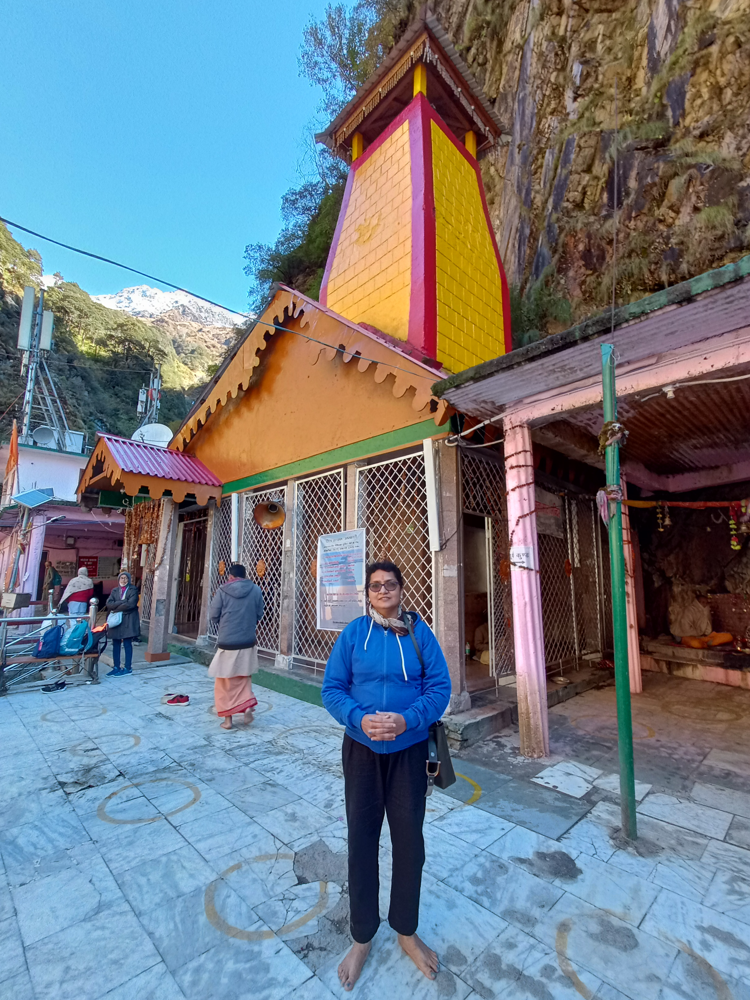
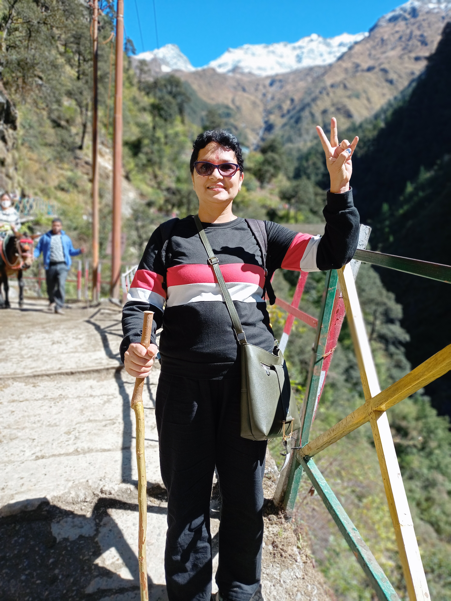
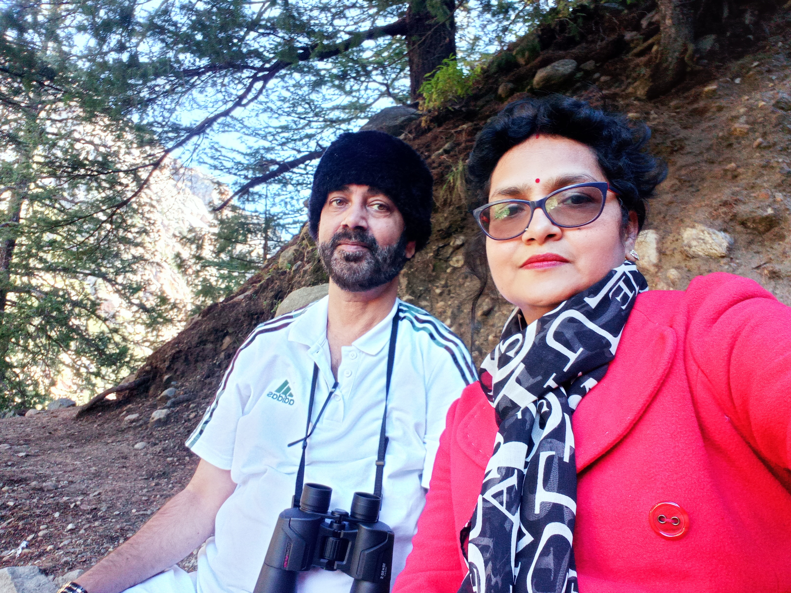
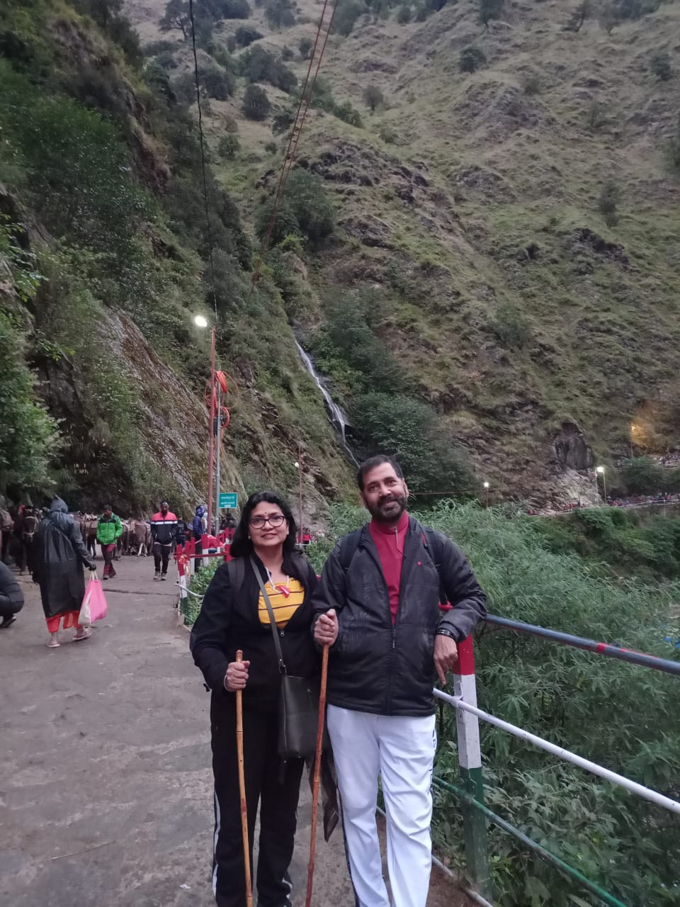
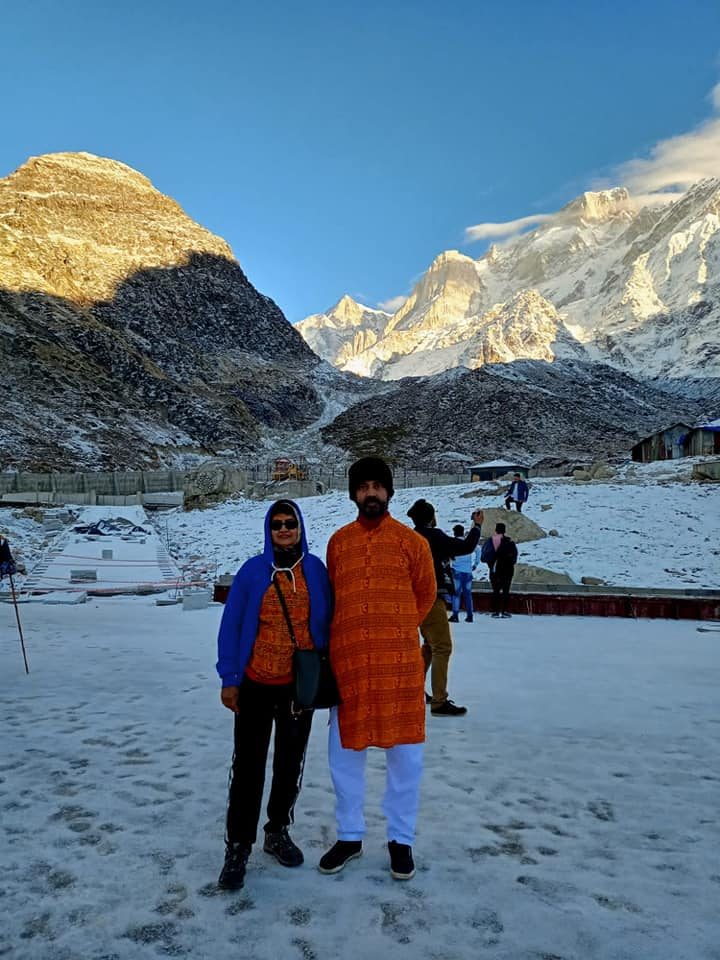
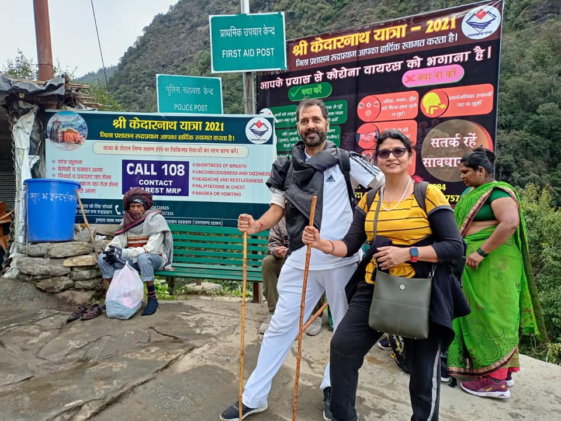
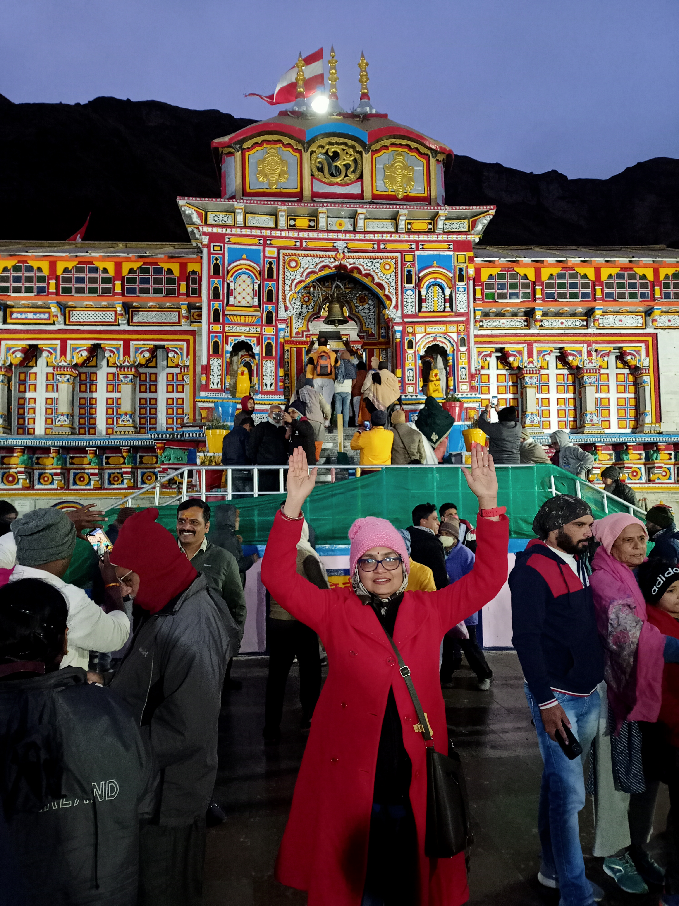

CHAR DHAM YATRA
Embarking on a Spiritual Journey:---
The Char Dham Yatra Introduction: In the foothills of the majestic Himalayas lies a pilgrimage of unparalleled significance – the Char Dham Yatra. This sacred journey takes devotees through four holy shrines in Uttarakhand, India, namely Yamunotri, Gangotri, Kedarnath, and Badrinath. Embarking on the Char Dham Yatra is not just a physical voyage; it is an opportunity to delve into the depths of spirituality, witness breathtaking natural beauty, and experience a profound connection with the divine. Let us embark on this spiritual odyssey and explore the wonders of the Char Dham Yatra.
Yamunotri:
The Source of Divinity The Char Dham Yatra begins with a visit to Yamunotri, the birthplace of the sacred river Yamuna. Nestled in the lap of the Garhwal Himalayas, this serene town offers a breathtaking view of snow-capped peaks and tranquil valleys. Devotees embark on a 6-kilometer trek from Janki Chatti to reach the Yamunotri temple, dedicated to Goddess Yamuna. The hot water springs of Surya Kund and Gauri Kund add a unique charm to the pilgrimage, offering a chance to cleanse both body and soul.GLIMPSE OF YAMUNOTRI :--




Gangotri:
The Sacred Abode of the Ganges Next on the Char Dham Yatra is Gangotri, the spiritual abode of the holy river Ganga. Located amidst the Garhwal Himalayas, Gangotri is a place of great religious significance. Pilgrims travel 18 kilometers from the town of Harsil to reach the Gangotri temple, where they offer prayers and seek blessings. The Ganges flowing through Gangotri exudes a divine aura, and the breathtaking views of snow-clad peaks and serene landscapes create a mesmerizing experience for all.GANGOTRI VIEW:--


Kedarnath:
The Seat of Lord Shiva The third stop on the Char Dham Yatra is Kedarnath, situated at an altitude of 3,583 meters above sea level. This sacred town is home to the famous Kedarnath temple, dedicated to Lord Shiva. The journey to Kedarnath is an adventure in itself, involving a 14-kilometer trek from Gaurikund, passing through scenic landscapes and gushing rivers. The grandeur of the temple, nestled amidst snow-covered peaks, evokes a sense of awe and reverence. It is believed that visiting Kedarnath and seeking the blessings of Lord Shiva can wash away one's sins and grant liberation from the cycle of birth and death.JAI BABA KEDARNATH....



Badrinath:
The Gateway to Salvation The final destination on the Char Dham Yatra is Badrinath, the abode of Lord Vishnu. Surrounded by the majestic Neelkanth Peak and Nar-Narayan mountain ranges, Badrinath offers a spiritual sanctuary for devotees. The Badrinath temple, with its intricate architecture and divine aura, draws pilgrims from far and wide. The Tapt Kund hot water spring and the nearby Mana village, believed to be the last inhabited village before the Indo-China border, add cultural and natural significance to the journey. Conclusion: The Char Dham Yatra is not merely a physical expedition; it is an immersive spiritual experience that leaves an indelible mark on the soul. As pilgrims traverse the breathtaking landscapes of Yamunotri, Gangotri, Kedarnath, and Badrinath, they connect with the divine, cleanse their spirits, and find solace in the lap of nature. This sacred journey instills a sense of humility, gratitude, and devotion in -->JAI BADRINATH....
